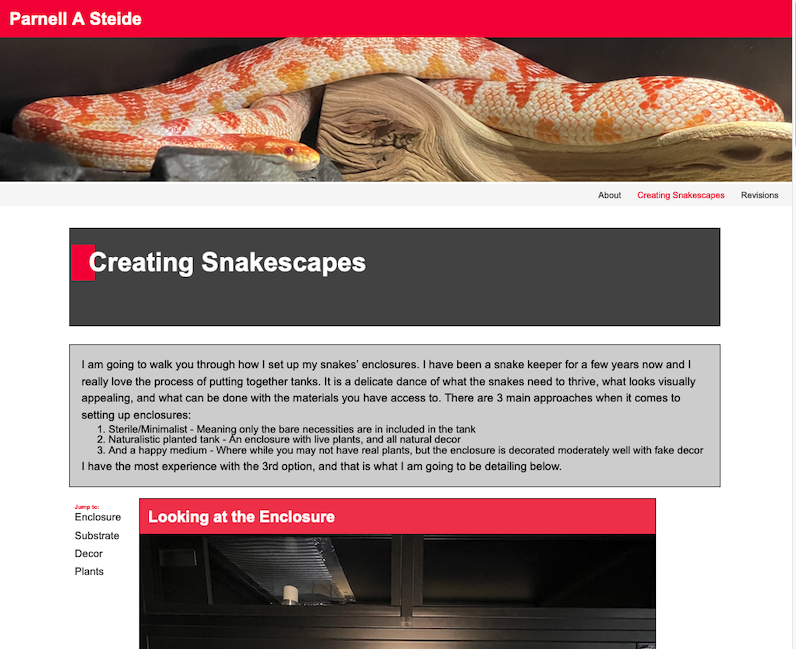

I asked my friend, Alex, to give me some suggestions on the site. He had some major pointers to give.
- Adjust the colors a bit, try to come up with a better theme
- Get rid of the bold in every paragraph, it’s too distracting
- Format the text better, try to get rid of huge blocks of text
- Try to find oppurtunties to use little graphics
Here is what the page looked like before, (click for bigger images)
- 